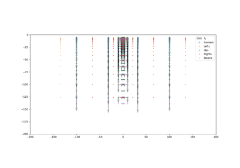

Chapter 2: Forward Geophysics¶
These examples show how to use some of the in built functionality for forward geophysics. At this date GemPy is not meant to be a package for classical geophysical inversion rather to allow probabilistic inversion. This means that we need algorithms that can be fast, differentiable but still capable to estimate the right answer!


2.2: Centered Grid.